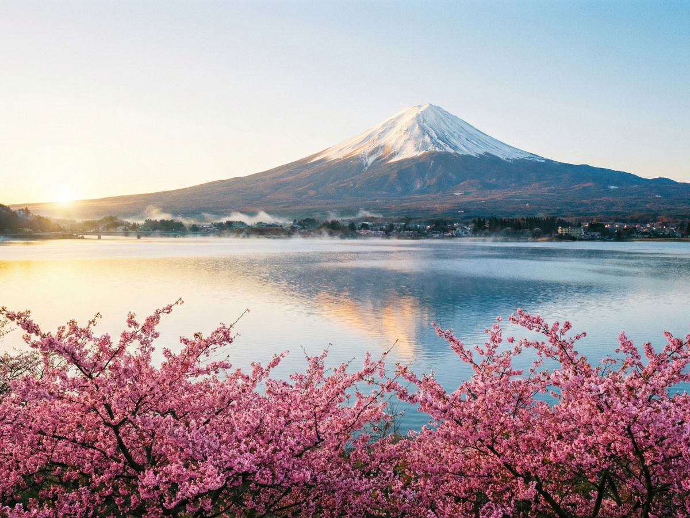
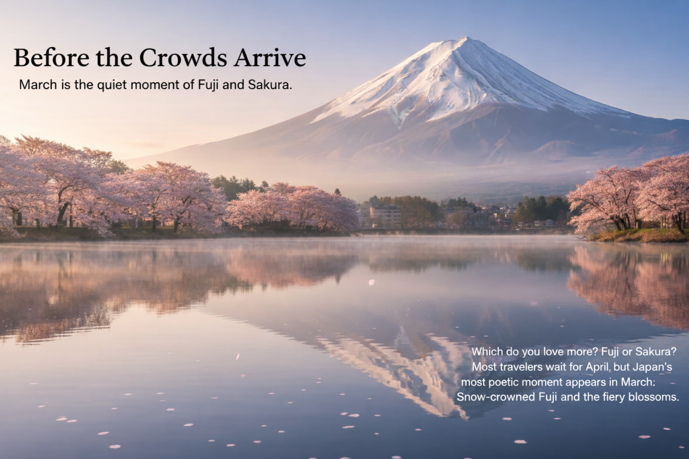
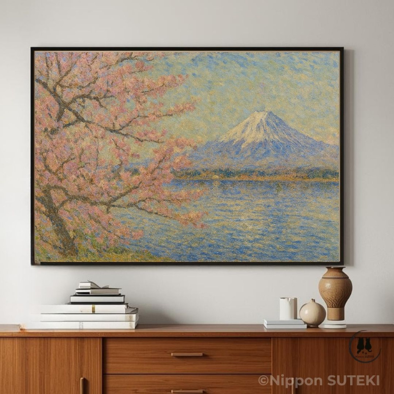

People often say Japan has four seasons.
Winter. Spring. Summer. Autumn.
But sometimes Japan quietly creates another one.
A small season that appears only briefly between winter and spring.
A season without a name.
People often say Japan has four seasons.
Winter. Spring. Summer. Autumn.
But sometimes Japan quietly creates another one.
A small season that appears only briefly between winter and spring.
A season without a name.

In late March something unusual happens.
High above the land, Mount Fuji is still covered in snow.
But down below, cherry blossoms begin to bloom.
Winter remains on the summit. Spring arrives at the foot of the mountain.
For a short moment the two seasons share the same landscape.

One of the best places to see this moment is near the Fuji River.
Many travelers pass through this landscape on the Tokaido Shinkansen.
If the timing is perfect, you might look out the window and see it.
Snow on Mount Fuji. Cherry blossoms blooming below.
But the train moves quickly.
The entire scene appears…
and disappears again in about four minutes.

Sari once saw this view from a slow local train.
The train moved gently through rice fields and small towns.
Mount Fuji stood quietly in the distance.
Cherry blossoms swayed in the breeze.
This time the moment lasted longer.
Long enough to truly notice it.
If you ever travel in Japan in late March, try looking carefully at the landscape.
You might discover this hidden season too.
And if you wonder why moments like this feel so special in Japan…
my sister Kiri has a thought about that.